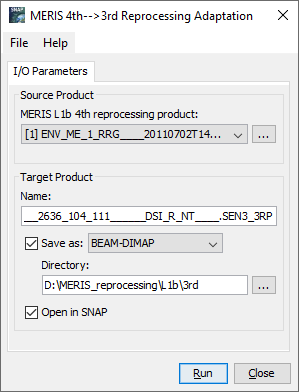

| SNAP Data Processors - MERIS L1b Fourth to Third Reprocessing Adaptation Processor Description |
|

Name: Used to select the spectral source product. The source product shall contain spectral bands providing a source spectrum at each pixel. Use the ... button to open a data product currently not opened in the Sentinel Toolbox.
For detailed product descriptions and file naming conventions see MERIS Product Handbook (http://envisat.esa.int/handbooks/meris/CNTR.html).
For more detailed information on MERIS 4th reprocessing products, see the Release Notes (https://earth.esa.int/eogateway/news/release-of-envisat-meris-4th-reprocessing-data-new-online-dissemination-service) as starting point.
Name: Used to specify the name of the target product.
Save to: Used to specify whether the target product should be saved to the file system. The combo box presents a list of file formats.
Open in SNAP: Used to specify whether the target product should be opened in the Sentinel Toolbox. When the target product is not saved, it is opened in the Sentinel Toolbox automatically.
No specific processing parameters are provided for the MERIS Reprocessing Adaptation Processor.
The target product contains all bands, tie point grids, flags and masks which are available in a corresponding ENVISAT MERIS L1b *.N1 product. Details of the adaptation procedure are given in the Algorithm Specification documentation.